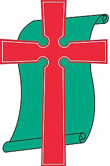

전남광주통합특별시 무안군 청계면 백련동1길 17-4
010 3501 8542 | https://ekodichurch.kr
010 3501 8542 | https://ekodichurch.kr

에 코 디 교 회창립 24.02.03.(03) | 발행 26.11.15(46)This Week’s Scripture for Meditation and Sharing · 11/15–11/21
| 일 11/15 | 월 11/16 | 화 11/17 | 수 11/18 | 목 11/19 | 금 11/20 | 토 11/21 |
|---|---|---|---|---|---|---|
| 고전 9:19-27 | 고전 10:1-13 | 고전 10:14-22 | 고전 10:23-11:1 | 고전 11:2-16 | 고전 11:17-26 | 고전 11:27-34 |
Community Announce
- 새로 나오신 분과 오랜만에 나오신 분을 주님의 이름으로 환영합니다.
- 매주 화요일 오전 10시, 평공목(평생공부하는목회자) 모임이 있습니다.
- 매주 토요일 오전 11시, 에코디 토요모임을 위해 기도와 협력을 위해 기도해주세요.
- 매주 일요일, 함께찬양하는사람들(함찬사) 모임을 위해 기도해 주세요.
- 신학대학원 입학과 학업을 준비하는 두번요 형제를 위해 기도해 주세요.
- 에코디교회·에코디선교회의 지역 섬김을 위해 함께 기도해 주세요.
- 오늘 11월 15일은 성령강림절 후 스물다섯째 주일입니다. 복음 안에서 받은 자유로 모든 사람의 자리에 다가가는 공동체가 됩니다.
- 언어와 문화가 다른 이웃, 약한 지체 곁에서 같은 눈높이로 함께 걷는 교회가 되도록 기도해 주세요.
- 오늘 주일모임 후 공동의회가 있습니다. 안건: 2025년 결산·2026년 예산 승인, 교회 정관 제정, 에코디비즈의 교회 공간 일부 무상사용 승인, 2027년 목포노회 동반성장 자립화교회 지원 신청. 세례교인께서는 모두 참석해 주세요.
- 온라인 예배에서 다국어 자막(영어·중국어·일본어·베트남어·몽골어)을 제공합니다.
Community Confession
하나님은 우리를 세상에서 하나님의 구별된 백성으로 부르셨습니다.
(갈 4:4-7, 롬 8:14-17, 벧전 2:9, 히 10:24-25)
하나님은 우리를 복음으로 서로 환대하며 나누는 공동체로 세우셨습니다.
(창 1:27, 31, 행 2:42-47, 롬 12:13)
하나님은 우리를 세상에서 자기비움과 자기부정으로 자유롭고 거룩하게 하십니다.
(행 1:8, 롬 8:28, 벧전 2:11-12, 렘 29:4-7, 빌 2:5-8, 눅 9:23)
Those who serve
| 구분 | 이름 | 구분 | 이름 |
|---|---|---|---|
| 대표 | 정찬균목사 | 찬양 | 박은희권사 |
| 협동 | 오원옥목사 | 연주 | 정성, 정결 |
Recent statistics
| 구분 | 장소 | 시간 | 인원 | 구분 | 장소 | 시간 | 인원 |
|---|---|---|---|---|---|---|---|
| 주일모임 | 교회 | 일요일, 11시 | 06 | 토요모임 | 교회 | 토요일, 11시 | 9 |
| 기도모임 | 교회 | 매일, 23:30 | 3 | 찬양모임 | 목포 | 일요일, 16시 | - |